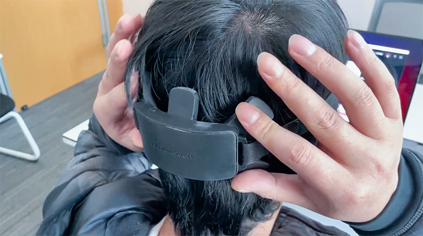
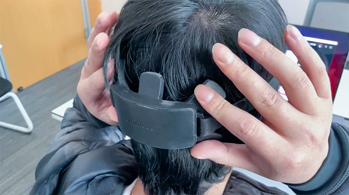

系统介绍
BrainTouch Lab 可穿戴设备
BrainTouch Lab 是一个基于视觉脑机接口的便携式可穿戴脑电图记录系统，为现实世界的脑电应用开发而设计，为用户提供方便快捷的配置体验及和高质量的 EEG 信号， 柔性电极设计及结构人体工学设计保证了长时间使用的舒适性。BrainTouch Lab 设备包含 7 个测量通道，采用柔性干电极技术 方案，根据佩戴方式调整可灵活应用于枕叶或顶叶的脑电信息采集。本设备的抗干扰能力使用户可以脱离严格的实验室环境限制进行灵活使用或现实 环境复杂场景下的应用开发与体验
BrainTouch Lab 软件
BrainTouch Lab自带用于脑电信号采集和数据可视化的配套软件，可用于设备数据的接收、个性化脑电数据可视化，及跨平台数据交互与应用，支持
在 Matlab、Python、Arduino 等平台上进行数据处理、数据应用或应用开发。
下载 BrainTouch Lab for Windows
Project Hub
使用说明
设备开机与蓝牙/USB连接
1. 短按开关开机，开机后红灯闪烁;
2. 打开 BrainTouch Lab 软件，首先选择设备连接方式(蓝牙或 USB)，点击 "连接设备" 进行可用设备扫描, 搜索到设备后点击设备名, 即完成连接
3. 连接过程中灯光变绿，连接成功后设备灯光变为蓝色常亮;
4. 长按 3s 关机，灯光熄灭。
佩戴设备
1. 打开头带两侧魔术贴，调松头带;
2. 将设备开关与指示灯一侧朝上，在所需佩戴区域（若需采集枕区脑电，建议佩戴在后脑枕外隆突以上区域）向头部按下的同时上下轻微移动，使电
极爪可以穿过头发接触到头皮；将头环在头部戴好，拉紧两侧头带，并将魔术贴固定；
3. 具体接触情况需参考BrainTouch Lab软件中的通道检测可视化信息，相应通道位置变绿说明该通道已通过佩戴检测、接触良好，未变绿的位置仍需
按下面的调节方式继续调节至全部通过；
通常有以下几种原因导致佩戴检测无法通过:
1) 引入肌电：建议调整坐姿，肩颈放松;
2) 参考通道接触不良(可表现为所有通道均无法通过): 建议先尝试拉紧头环，若无改善，可以向头部整体按下设备的同时上下轻微移动，并重点单独按压最下面一排中间的电极增强参考电极的接触;
3) 个别通道接触不良(可表现为个别通道始终无法通过): 单独按压/轻微来回移动相应位置电极调整接触情况。
 

佩戴建议:
1) 头发很厚的用户建议佩戴前先将目标区域头发拨开，可以减少调整佩戴至检测通过的时间;
2) 建议佩戴几分钟后再进行预训练，因为电极与皮肤的接触情况需要一定的时间来达到稳定的状态;
3) 检查未通过佩戴检测的电极是否出现压在较厚的头发区域、电极爪翻倒（见下图）、电极脱落等情况。
数据可视化及数据存储
可视化：7个通道的脑电波形可视化实时绘制，可以手动设置Notch filter及Bandpass参数， 除系统默认参考通道外，也支持自定义参考通道；支持FFT及bandpower可视化；电极接触情况可视化及佩戴调整建议。 数据使用过程中, 可以关闭数据可视化界面(不影响数据存储), 以节省系统内存。
数据存储（*此功能需使用管理员权限打开软件）：完成设备蓝牙连接与佩戴后，可点击“开始存储数据”，自定义文件名，开始离线数据本地存储，点击“结束存储数据”结束数据存储。
跨平台数据交互
BrainTouch 软件安装并打开后会自动识别本机IP地址，在手动输入端口信息后，点击开始传输，及可实现数据向其他应用的传输，如 Matlab、
Python、Arduino 等。

网络协议
TCP、Socket
客户端建立连接之后, 如果退出请及时 close, 否则可能会一直占用服务端资源, 导致数据发送异常IP 端口
使用本机 IP, 默认端口号: 9600
指令
"config" 获取数据配置, 客户端可根据 pkgLength 固定长度读取 EEG 数据, 避免粘包问题, 返回 json 字符串:
{
"pkgLength":512, // 每个包的长度，不同设备长度会变化
"pkgGroups":5, // 每个包包含几组数据
"channelNum":8, // 设备通道数
"deviceName":"NN-02-A551864D35" // 设备名称
}"config_str" 获取数据配置, 返回逗号 "," 分隔字符串:
"$每个包的长度,$每个包包含几组数据,$设备通道数,$设备名称""start" 开始发送 EEG 数据, 使用逗号 "," 分隔, 第 1 个为格式化(HH:mm:ss.SSS)后的时间戳, 第 2 个为包号(0~255), 第 3 个开始为每个通道(1 ~ channelNum)点的数据, 总点数为 pkgGroups * channelNum, 后面的数据不需要处理,格式如下:
17:52:17.822,87.0,4.7609215,8.58307,8.493663,3.6433342,14.1933565,11.041761,7.5101857,5.9902673,4.4032936,9.186566,
8.873642,3.9115553,15.310945,11.5335,7.9125175,7.1972613,4.112721,8.806587,8.784235,3.933907,15.13213,11.265279,
8.0913315,6.5714126,4.895032,8.0913315,8.024276,3.4645202,14.148653,10.572374,7.6666484,5.654991,5.319715,7.6219444,
8.024276,3.218651,13.656915,10.415913,7.4431305,5.230308,0.0,0.0,2.4375,65.0,0.0
17:52:17.836,88.0,4.9397354,7.554889,8.471311,3.4198167,14.327467,11.242927,7.890166,5.8114533,4.2244797,8.3372,
8.448959,4.023314,15.445055,11.824072,8.136035,6.549061,3.8892035,8.516014,8.270145,3.8221483,15.400352,11.868775,
8.225442,6.616116,4.380942,7.800759,7.7337036,3.218651,14.506281,11.019409,7.6442966,5.677343,5.0291424,7.711352,
7.5995927,3.1068923,13.813377,10.684134,7.3760753,5.6102877,0.0,0.0,2.4375,65.0,0.0
"stop" 停止发送 EEG 数据
基于 BrainTouch 与 MATLAB 的基础 EEG 数据框架示例
本示例主要包括两部分
- BrainTouch_socket：数据端，负责构建与 BrainTouch lab 的连接以及数据传输，解码
- BrainTouch_SSVEP_Example：范式端，BrainTouch_socket 的使用示例，以及构建简单的 EEG 在线系统的示例
API:
BrainTouch_socket：
BrainTouch_socket 初始化
function [tcpip_client,dataBuffer,pkgGroups] = SocketInitialize(ipAddress,serverPort)
%初始化，获取Socket通信参数
%% ipAddress:BrainTouch lab 获取的本机 IP 地址
%% serverPort：端口号
%% tcpip_client：TCP对象
%% dataBuffer：每个数据包的字节数
%% pkgGroups：服务端组包的数量
tcpip_client = tcpip(ipAddress,serverPort);
fopen(tcpip_client);
fwrite(tcpip_client,'config','char')% 向服务器请求设备参数
configuration = [];
while isempty(configuration)
while get(tcpip_client,'BytesAvailable')>0
configuration = fread(tcpip_client,get(tcpip_client,'BytesAvailable'));
configuration = native2unicode(configuration,'UTF-8');
configuration = strcat(configuration)';
end
end
configuration = jsondecode(configuration);% 转为结构体数据类型
dataBuffer = configuration.pkgLength;%提取TCP传输关键参数：字节数
pkgGroups = configuration.pkgGroups;%提取TCP传输关键参数：蓝牙组包个数，不同设备解码方式不一致
fwrite(tcpip_client,'start','char')%开始数据传输指令
disp(['初始化完成，开始数据传输'])
endBrainTouch_socket 数据传输
function data=pGetData(tcpip_client,dataBuffer,pkgGroups)
if get(tcpip_client, 'BytesAvailable') > 0
signal=fread(tcpip_client,dataBuffer);%发送数据较多的话，需要改buffer
signal = native2unicode(signal,'UTF-8');
eeg = strcat(signal)';
data = char2eegmatrix(eeg,pkgGroups);
disp(data)
else
data=[];
end
end示例
示例如何使用 BrainTouch_socket 获得数据，并将数据流与范式连接起来
数据流为实时不中断形式，使用计时器方法，以固定周期轮询通信管道，读取数据并赋值给变量 circBuff
params.chanNum = 8;
params.sampleRate = 250;
params.dataLength = 0.04;%单位：秒
buffSize = params.sampleRate*params.dataLength;
circBuff = zeros(buffSize,params.chanNum);
ipAddress = '192.168.1.156';
serverPort = 9600;
[tcpip_client,dataBuffer,pkgGroups] = SocketInitialize(ipAddress,serverPort) ;
try
fixTime= timer( 'Period', 0.002);%计时器周期
set(fixTime, 'ExecutionMode', 'FixedRate');
set(fixTime,'TimerFcn',['channelData = pGetData(tcpip_client,dataBuffer,pkgGroups);', 'if ~isempty(channelData)',...
'circBuff = [circBuff(size(channelData,1)+1:end,:);channelData];','end;',...
]);
start(fixTime);
catch
fclose(tcpip_client);
delete(tcpip_client);
stop(fixTime);
close all;
end计时器周期不能低于 Socket 发包速度，设备采样率 250Hz，本示例设置周期 2 毫秒。因为在同一进程中，你可以在任意时刻对数据变量 circBuff 做处理。
基于 BrainTouch 与 Python 的基础 EEG 数据框架示例
本示例主要包括两部分
- BrainTouch_socket：数据端, 负责构建与 BrainTouch lab 的连接以及数据传输, 解码
- BrainTouch_Demo：范式端, BrainTouch_socket 的使用示例, 以及基于 multiprocessing 构建简单的 EEG 在线系统的示例
API:
BrainTouch_socket：
- BrainTouch_socket.DataStream (IP, PORT, data_length, Data_pend, trigger_queue)
数据流工作类, 包括数据接收, 解码以及发送的业务逻辑实现, 用于创建与 BrainTouch lab 的连接, 并实时返回数据
-
Parameters：
-
IP: str
BrainTouch lab 服务器 IP 地址 -
PORT：int
BrainTouch lab 服务器的暴露端口 -
data_length：float
以秒为单位预设的单次数据返回长度，默认为 1 ，意味着在250Hz采样率下 DataStream 程序每隔1秒返回一次 [channel, 250*1] 形式的数据。 注意在更改此参数时其数值需要与传输协议相匹配，具体为 data_length * 250 / pkgGroups 须为整数 -
Data_pend：multiprocessing.Pipe
multiprocessing.Pipe实例，数据端与范式端的数据通信管道，用于向范式端发送 data_length 长度的数据 -
trigger_queue：multiprocessing.Queue
multiprocessing.Queue实例，数据端与范式端的标签通信，用于接收来自范式端的标签
-
IP: str
-
Function：
-
run_DataStream：
开启数据流，该函数启动后将按照 data_length 的设置不断通过 Data_pend 发送BrainTouch设备采集的实时数据，发送的数据类型为 numpy.ndarray ，shape为 [channel, 250*data_length：float]
-
run_DataStream：
示例：
示例如何使用 BrainTouch_socket 获得数据，并将数据流与范式连接起来
数据流为实时不中断形式，所以推荐使用多进程方式构建在线系统框架，这里使用 multiprocessing 进行演示，具体代码请参阅 BrainTouch_Demo
# 构建数据端的进程函数
def EEG_Data_stream(Data_pend,trigger_queue):
# 实例化 DataStream 工作类
S = DataStream(IP='192.168.1.39', PORT=9600,data_length=1, Data_pend=Data_pend,trigger_queue=trigger_queue)
# 启动数据流
S.run_DataStream()接下来构建范式端
def EEG_Paradigm(Paradigm_tel,trigger_queue): # 构建范式端进程函数
while True:
x_1s = Paradigm_tel.recv() # 循环方式读取由数据端通过管道发送的EEG数据，注意Pipe的recv()方法是阻塞的，因此将等待直到数据端接收到足够长度的数据，可以通过改变data_length控制返回间隔
print('接收数据类型: ',type(x_1s), ' ','shape: ',x_1s,shape)
time.sleep(0.5)
trigger_queue.put(10) # 发送标签 "10"为了保证范式端与数据端同时实时运行且互不干扰，在示例中使用 multiprocessing 进行多进程工作
Data_pend, Paradigm_pend = Pipe() # 实例化数据通信管道
trigger_Queue = Queue(1) # 实例化标签通信队列
p1 = Process(target=EEG_Paradigm, args=(Paradigm_pend, trigger_Queue, )) # 创建范式端进程
p2 = Process(target=EEG_Data_stream, args=(Data_pend, trigger_Queue, )) # 创建数据端进程
print('开始')
p1.start() # 开始示例
p2.start()基于 BrainTouch 与 ESP32 的基础 EEG 数据框架示例
本示例主要包括两部分
- socket 连接：介绍基于 lwip 协议栈的 socket 连接 API, 及数据传输和解码
- 数据使用：本示例介绍基于 WiFi 连接的数据传输及处理方法
API:
- socket(int domain, int type, int protocol)
创建 socket, 封装自 lwip 的 lwip_socket
-
Parameters：
-
int domain
domain 地址族：PF_INET, PF_INET6, PF_UNSPEC -
int type
type 三种类型：
SOCK_STREAM：流式套接字提供可靠的、面向连接的通信流，它使用TCP 协议。
SOCK_DGRAM： 数据报套接字定义了一种无连接的服 ，它使用数据报协议UDP。
SOCK_RAW： 原始套接字允许对底层协议如IP或ICMP进行直接访问。 -
int protocol
protocol系统使用的协议有：IPPROTO_IP, IPPROTO_ICMP, IPPROTO_TCP, IPPROTO_UDP
-
int domain
- connect(int s, const struct sockaddr *name, socklen_t namelen)
连接 socket，封装自 lwip 的 lwip_connect
-
Parameters：
-
int s
socket() 返回文件描述符代表的套接字 -
const struct sockaddr *name
存放了服务端用于通信的地址和端口 -
socklen_t namelen
sockaddr 结构体的长度
-
int s
- send(int s, const void *data, size_t size, int flags)
发送数据，封装自 lwip 的 lwip_send
-
Parameters：
-
int s
目标连接文件描述符代表的套接字 -
const void * data
发送数据的指针 -
size_t size
发送数据的长度 -
int flags
标志位
-
int s
- recv(int s, void *mem, size_t len, int flags)
接收数据, 封装自 lwip 的 lwip_recv
-
Parameters：
-
int s
目标连接文件描述符代表的套接字 -
void * mem
接收数据存放地址指针 -
size_t size
接收数据的长度 -
int flags
标志位
-
int s
- parse_str(const char *str, float *out, int len)
数据解析，将字符数据转为 float
-
Parameters：
-
const char *str
输入数据地址指针 -
float *out
输出数据地址指针 -
int len
数据长度
-
const char *str
示例：
示例，如何使用 api 连接 wifi，建立 socket 连接，接收数据，及数据解析。
以下将关键代码列出
...
esp_wifi_connect();
...
sock = socket(addr_family, SOCK_STREAM, ip_protocol);
...
int err = connect(sock, (struct sockaddr *)&dest_addr, sizeof(struct sockaddr_in6));
...
int err = send(sock, socket_cmd_config, strlen(socket_cmd_config), 0);
...
while (1)
{
int len = recv(sock, rx_buffer, 512, 0);
//接收512个字节数据并进行处理
}接下来演示数据解析
// 将字符流转为float数据，eeg_group_len：一个数据包内含有多少组数据，eeg_channel：通道数
parse_str(rx_buffer, rx_fbuffer, eeg_group_len * eeg_channel + 3);
float *data = rx_fbuffer + 3;
for(int i=0; i < eeg_group_len; i++)
{
for(int j=0; j < eeg_channel; j++)
{
eeg_queue_push(&eeg_data[j], &data[i * 8 + j], 1);
}
}
//此处为每一个通道创建一个队列，每解析一个数据压入相应队列为保证数据传输的实时性，数据使用在一个独立的任务中进行
void process_task(void)
{
while(1)
{
...
//收到信号，从队列中取出数据
//eeg_queue：数据队列；eeg_buffer：数据缓存
eeg_queue_poll(&eeg_queue[i], eeg_buffer);
...
数据处理，根据不同范式进行算法运算
}
}我们同时也提供在 Matlab、Python、Arduino 平台进行数据交互与应用开发的示例教程及相应源代码，您可以点击下方链接进行体验与探索。
Project Hub
数据应用示例教程